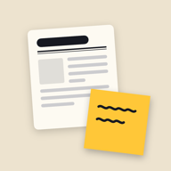

Newslog
기사 필사와 포스트잇 메모 · iPhone · Mac
읽은 기사를 한 문장씩 옮겨 적고, 떠오른 생각은 포스트잇으로 붙여 두는 나만의 뉴스 기록장이에요.
문의·지원
사용 중 궁금한 점이나 문제가 있으면 lee.jeonghyun@icloud.com으로 알려 주세요.
자주 묻는 질문
아이폰과 Mac 기록이 맞춰지지 않아요.
두 기기가 같은 Apple ID로 iCloud에 로그인되어 있는지 확인해 주세요. 처음 맞춰질 때는 몇 분 걸릴 수 있어요. 앱의 설정 → 동기화에서 상태를 볼 수 있어요.
기록을 백업하고 싶어요.
첫 화면 … → Markdown으로 내보내기로 전체 기록을 파일로 저장할 수 있어요.
개인정보
Newslog는 개인정보를 수집하지 않아요. 개인정보처리방침 보기